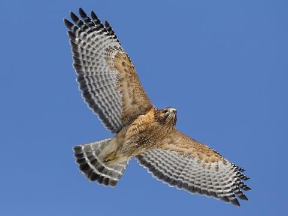

red-tailed Hawk
The red-tailed hawk is a bird of prey that breeds throughout most of North America, from the interior of Alaska and northern Canada to as far south as Panama and the West Indies. It is one of the most common members within the genus of Buteo in North America or worldwide.
